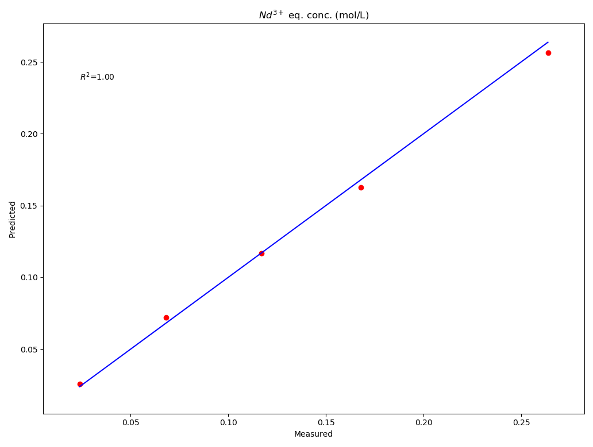

Getting Started¶
Here is a quick example of how to fit an xml thermodynamic model to experimental data.
This code fits Nd standard enthalpy in the "twophase.xml" cantera file to the experimental data in "Nd_exp_data.csv".
This code requires that you copy and paste the "elementz.xml" file in the llepe's data folder into the Cantera's data folder located in your environments site-packages folder.
The code then produces a parity plot of the measured and predicted concentrations of Nd 3+ in the aqueous phase.
from llepe import LLEPE
opt_dict = {'Nd(H(A)2)3(org)_h0': {'upper_element_name': 'species',
'upper_attrib_name': 'name',
'upper_attrib_value': 'Nd(H(A)2)3(org)',
'lower_element_name': 'h0',
'lower_attrib_name': None,
'lower_attrib_value': None,
'input_format': '{0}',
'input_value': -4.7e6}}
searcher_parameters = {'exp_data': 'Nd_exp_data.csv',
'phases_xml_filename': 'twophase.xml',
'opt_dict': opt_dict,
'phase_names': ['HCl_electrolyte', 'PC88A_liquid'],
'aq_solvent_name': 'H2O(L)',
'extractant_name': '(HA)2(org)',
'diluant_name': 'dodecane',
'complex_names': ['Nd(H(A)2)3(org)'],
'extracted_species_ion_names': ['Nd+++'],
'aq_solvent_rho': 1000.0,
'extractant_rho': 960.0,
'diluant_rho': 750.0}
searcher = LLEPE(**searcher_parameters)
est_enthalpy = searcher.fit()
searcher.update_xml(est_enthalpy)
searcher.parity_plot(print_r_squared=True)
The code should return something like this
